Rippled clouds at sunset
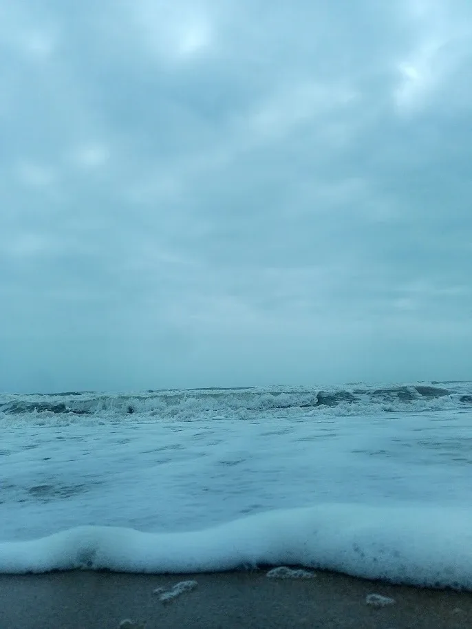
Waves, low angle
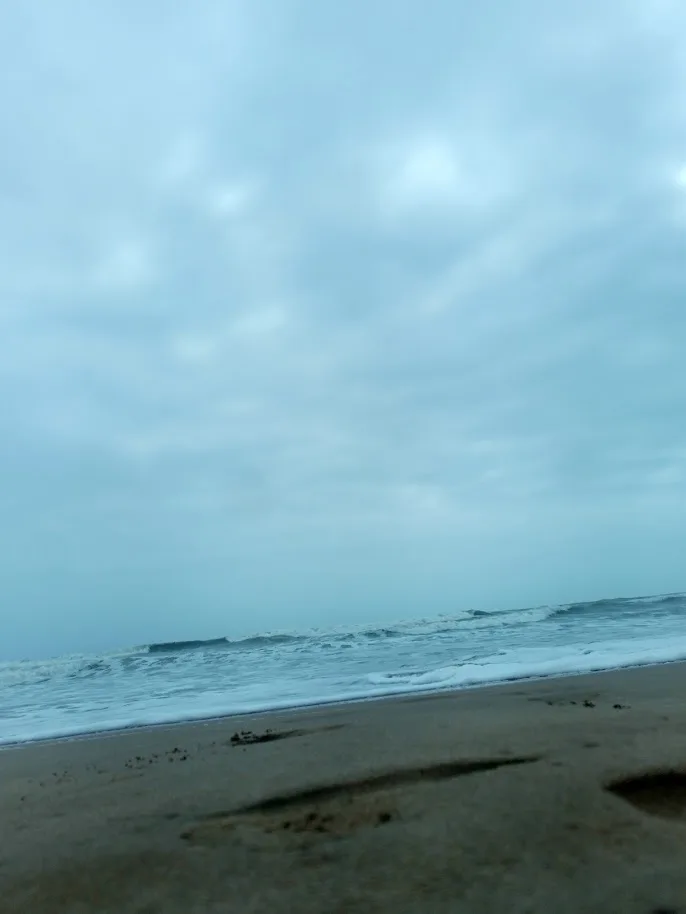
Footprints on the shore
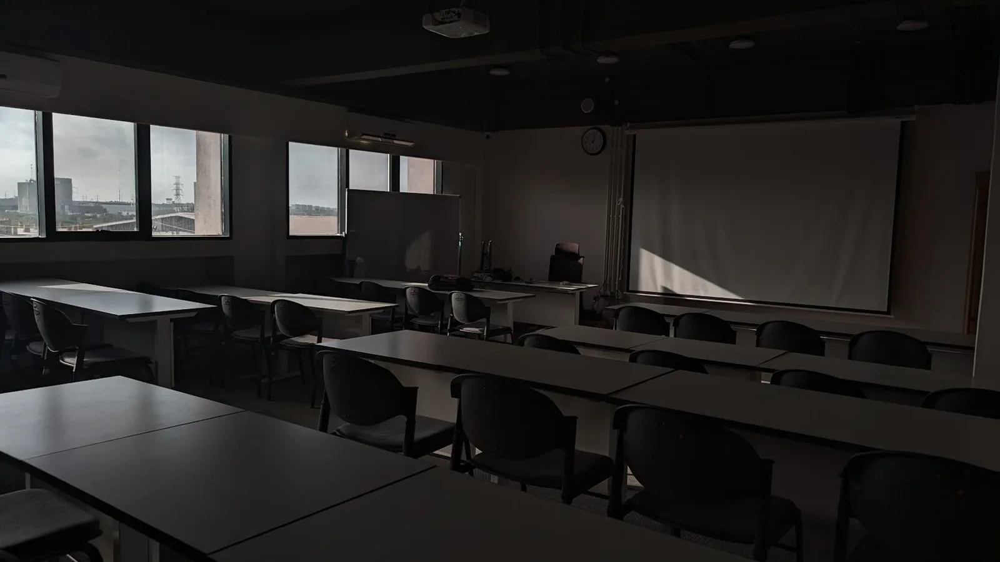
Empty classroom, afternoon light
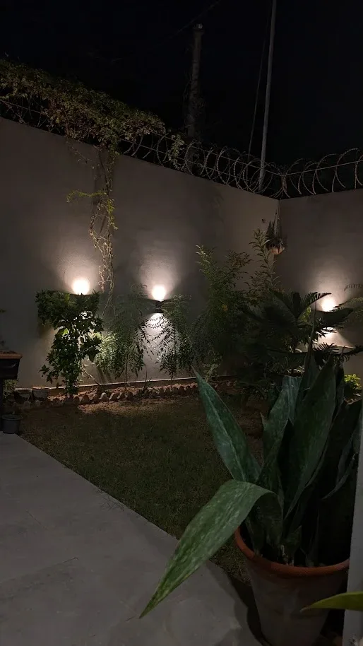
Garden lights at night
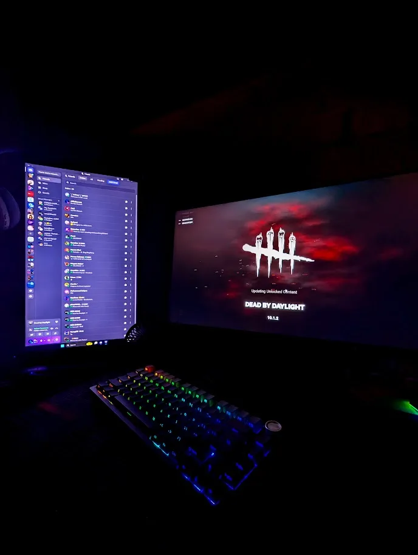
Setup after dark
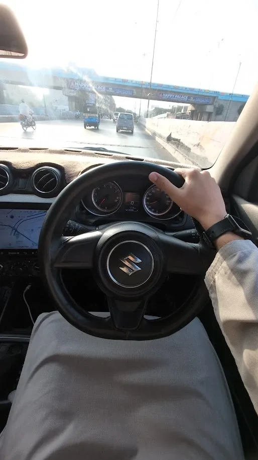
Golden hour on the road
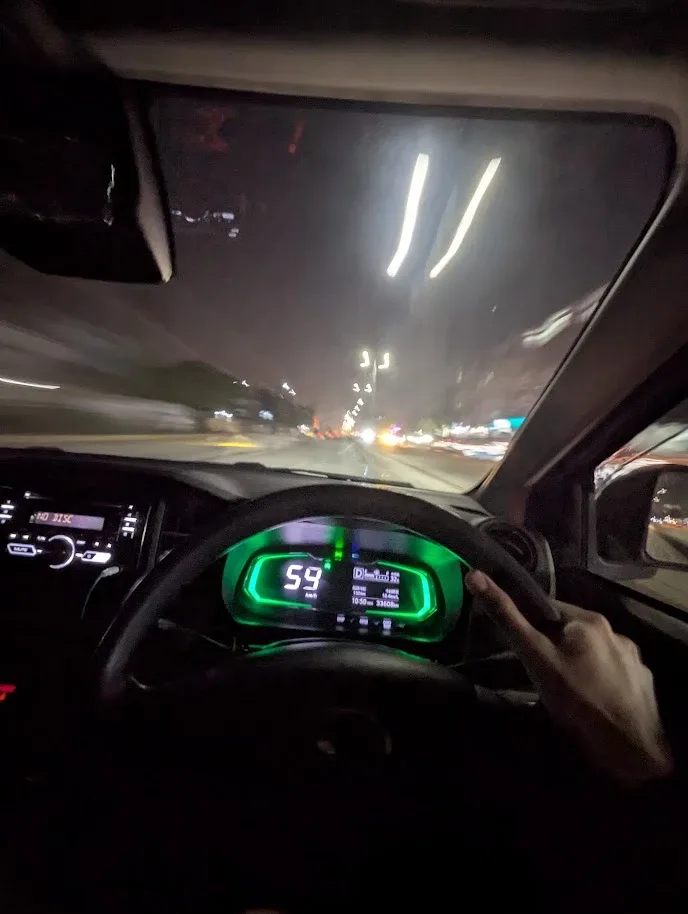
Night drive, light trails
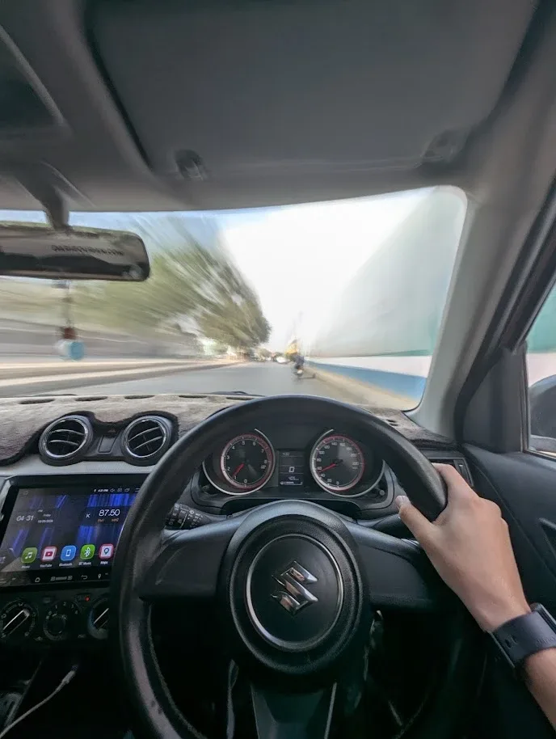
Speed blur, daytime
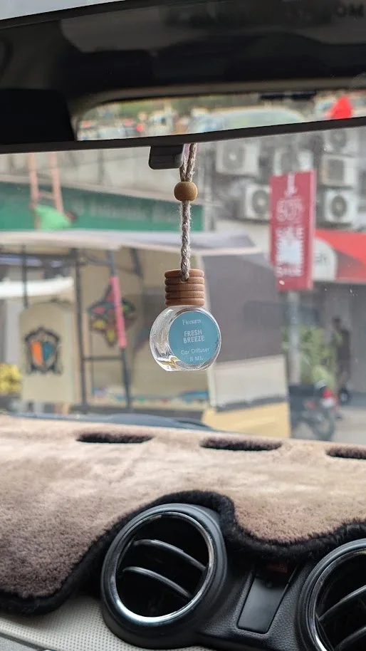
In focus, street blurred
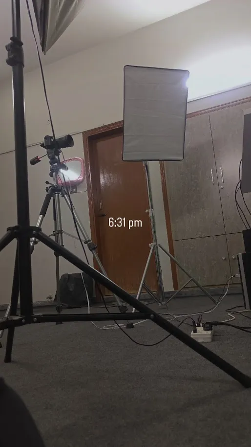
Setting up for a shoot
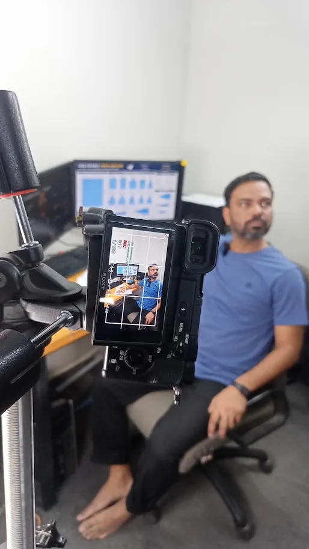
Filming promotional video content for Chaajao
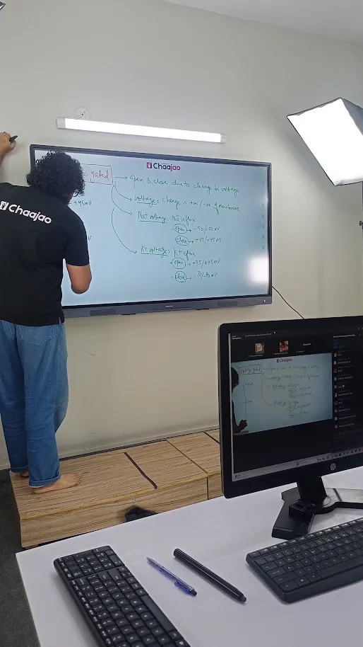
A live class in session
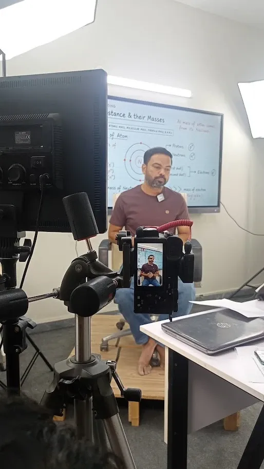
Recording a lecture
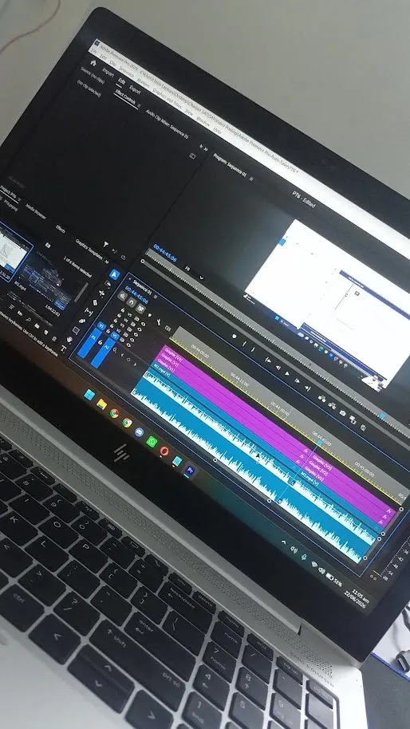
Editing in Premiere Pro
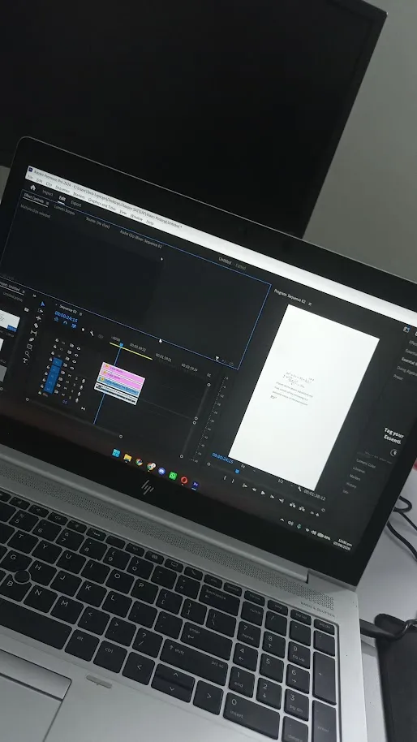
Editing a vertical video
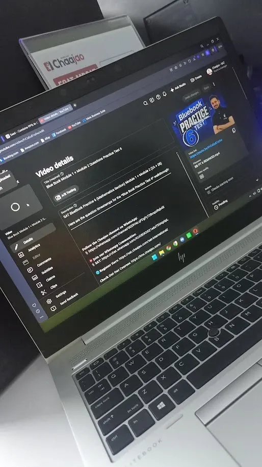
Publishing an edited SAT video
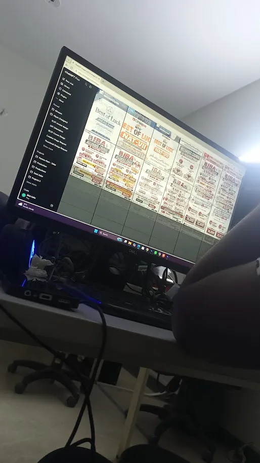
Designing social media posts
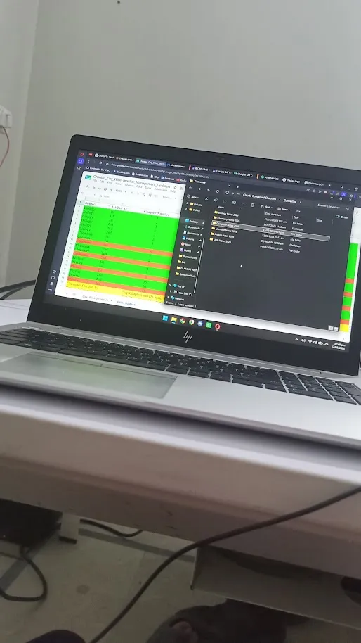
Maintaining Chaajao tracking sheets